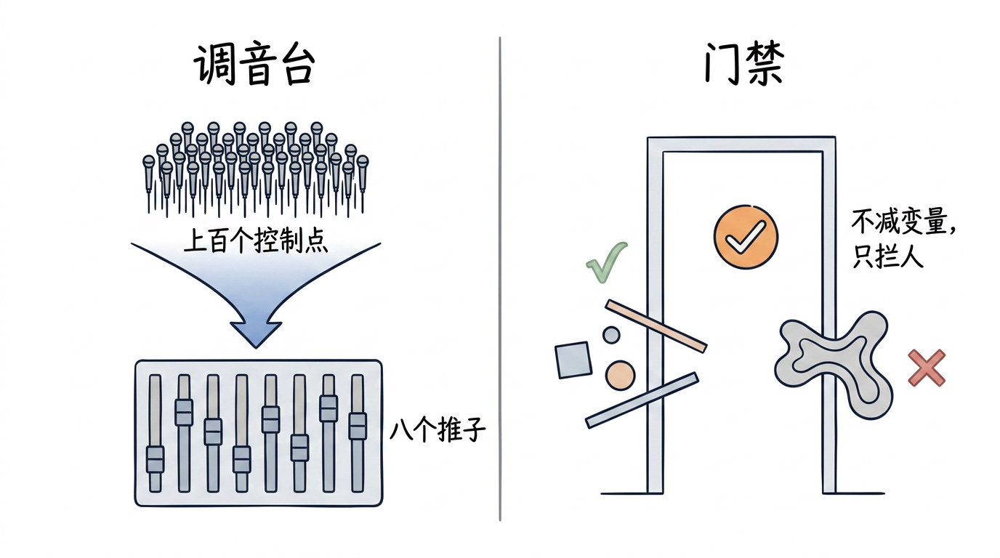
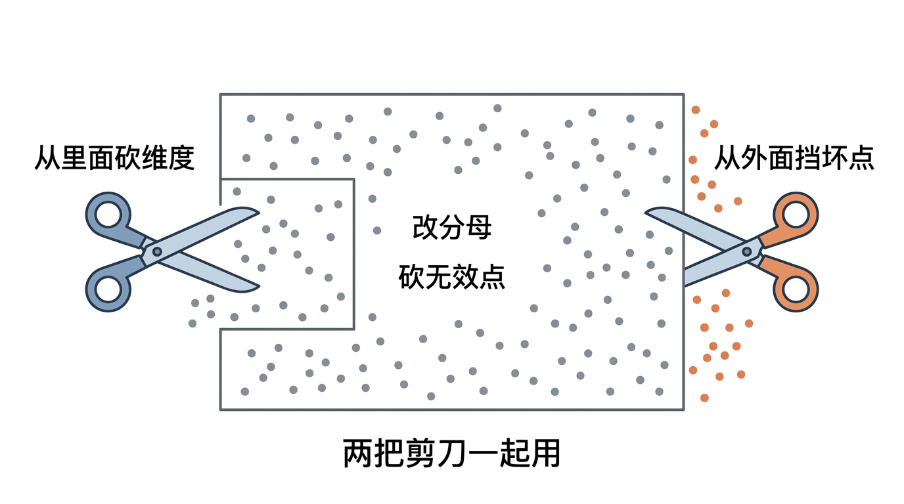
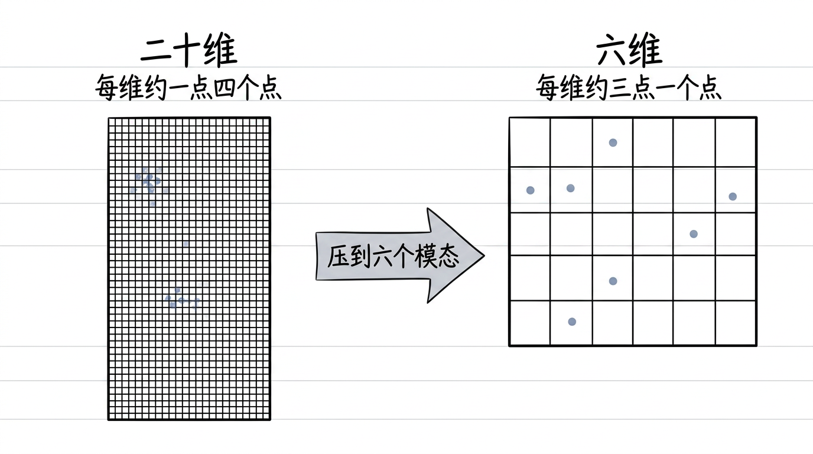
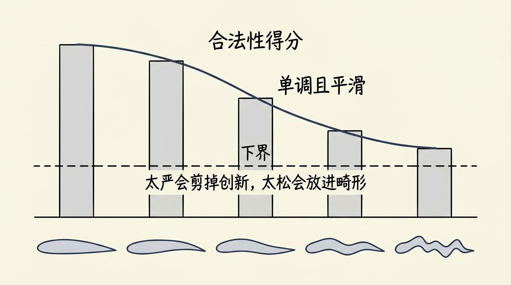
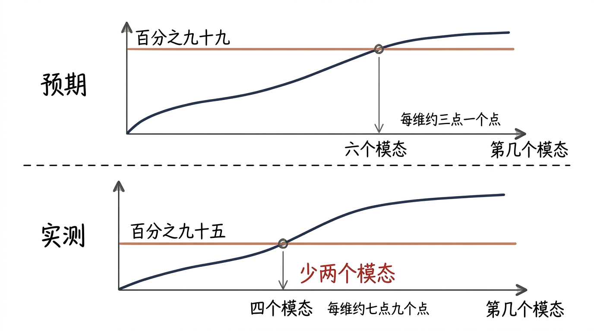
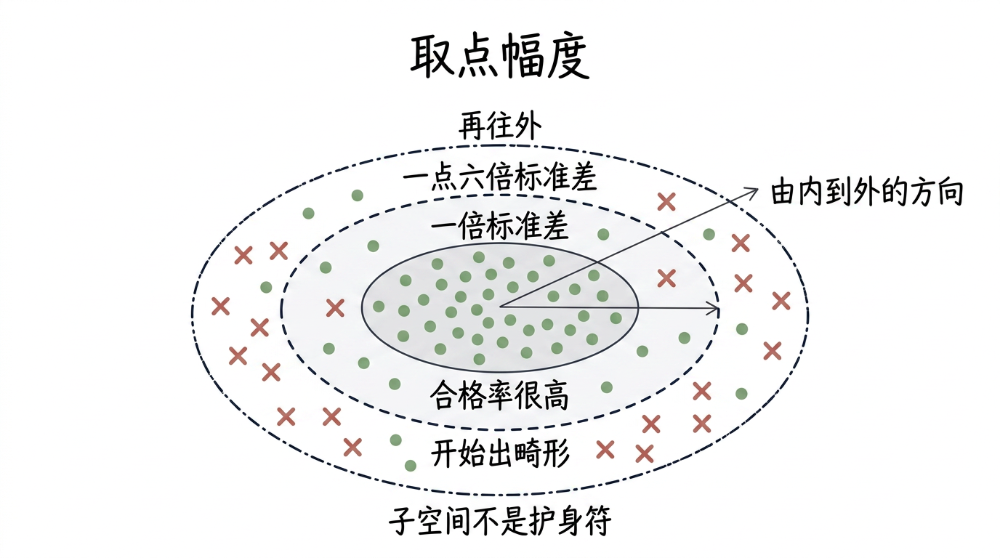
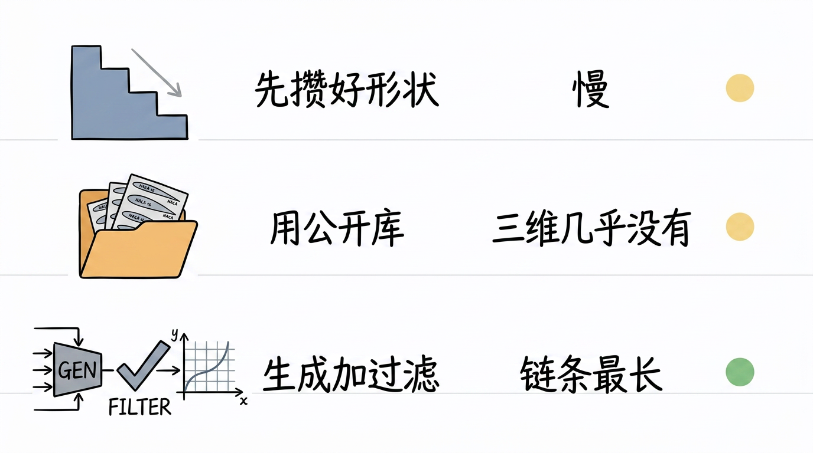
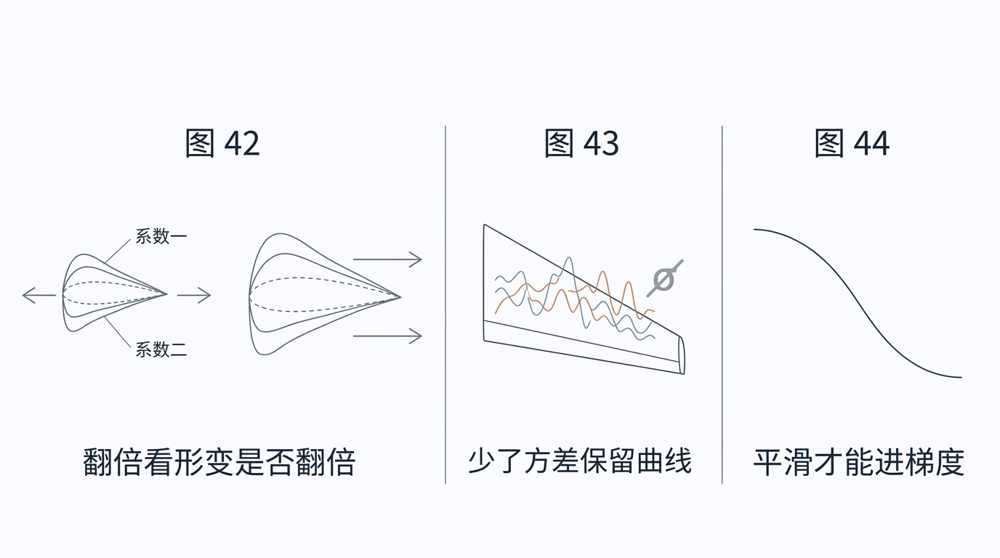
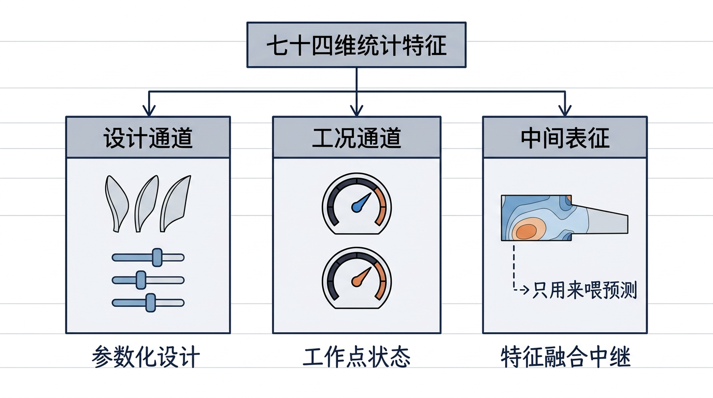
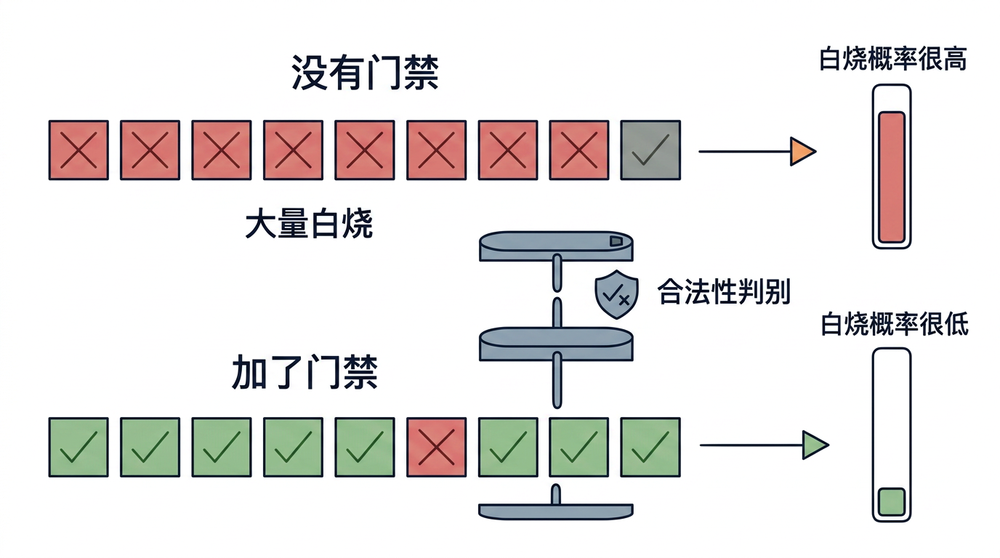

画风基准：第零章 ch0v2_s3_two_routes_zh.png 与 ch0v2_s3_blind_search_timeline_zh.png。
判定：中文有没有糊、一图是否只讲一义、有没有混入装饰性 Emoji、和基准画风是否一致。
 §3 引子 s1左：调音台把上百个控制点收成八个推子；右：门禁不减变量，只拦人 |
 §3 s2两把剪刀：一把从里面剪掉维度，一把从外面剪掉坏点 |
 §5(a) s3二十维收成六维：每维点数从 1.41 涨到 3.16 |
 §5(c) s3合法性得分从真实到畸形单调平滑衰减（对照 Fig.44） |
 §5(d) 打脸 s3能量线 99%→95%：模态 6→4、每维点数 3.16→7.95（须含“预期/实测”） |
 §5(d) s3取点幅度从 1.0σ 放大到 1.6σ，畸形开始漏进来 |
 §6 s4三条抽模态路线：先攒好形状、用公开库、生成加过滤 |
 §7 s5三张图读法：翻倍看形变、少了方差曲线、平滑才能进梯度 |
 §10 s8七十四维拆三层：设计通道、工况通道、中间表征 |
 §10 s8门禁前后：一次 CFD 白烧概率从 93.5% 压到 2.8% |